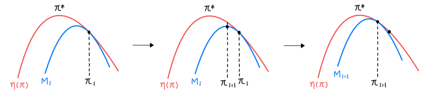
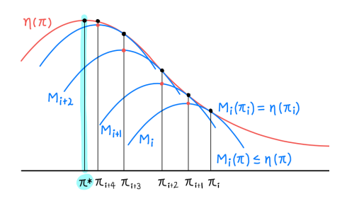
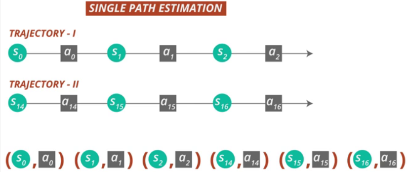
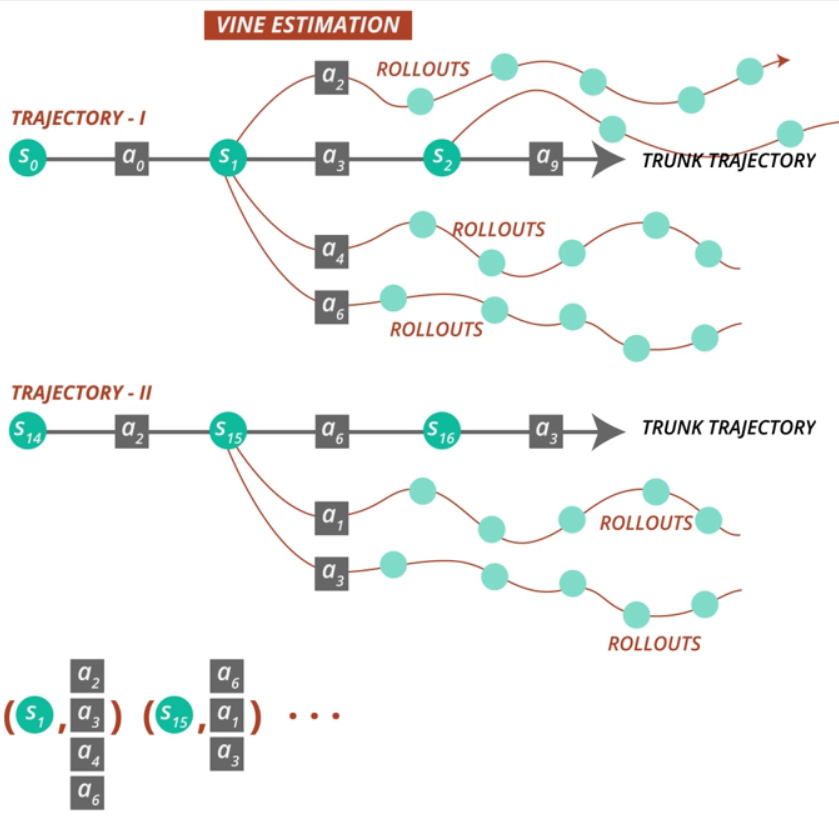

The performance of DDPG does not improve monotonically. TRPO addresses the problem by adopting two concepts: Minorization-Maximization algorithm and trust region. Policy updates on the trust region guarantee monotonic improvement of the expected return. Its implementation is complicated so being not practical.
Background
c:S→R is the cost function.
π:S×A→[0,1] is a stochastic policy.
η(π)=Es0.a0.⋯[t=0∑∞γtc(st)], where s0∼ρ(s0),at∼π(at∣st),st+1∼P(st+1∣st,at) is expected discounted cost.
The state-action value function Qπ(st,at)=Est+1,at+1,⋯[l=0∑∞γlc(st+l)].
The value function Vπ(st)=Eat,st+1,⋯[l=0∑∞γlc(st+l)].
The advantage function Aπ(s,a)=Qπ(s,a)−Vπ(s).
Alternatively we compute η(π~) from the old policy π.
This equation implies that any policy update π→π~ that has a non-positive expected advantage at every state s is guaranteed to reduce η. However, due to estimation and approximation error, there will be some states s for which the expected advantage is positive. The complex dependency of ηπ~(s) on π~ makes (2) difficult to optimize directly, so instead we use ηπ.
(3)Lπ(π~)=η(π)+s∑ρπ(s)a∑π~Aπ(s,a)
It ignores changes in state visitation density due to changes in the policy.
We can see that Lπ matches η to first order(same gradient). Thus a sufficiently small step
πθ0→π~ that reduces Lπold will also reduce η. But it does not give us any guidance on how big of a step to take.
Use the conservative policy iteration update(Kakade & Langford) to address this problem.
The new policy πnew is taken to be the following mixture policy.
(5)πnew(a∣s)=(1−α)πold(a∣s)+απ′(a∣s)
Then by Kakade & Langford proved that it has the lower bound:
Note that this bound is only applies to the mixture policy, which is restrictive in practice.
Monotonic Improvement
The policy improvement bound in (6) can be extended to general stochastic policies rather than mixture polices by replacing α with a distance meqsure between π and π~.
We use the total variation divergence DTVmax(π,π~)=21∑i∣pi−qi∣.
(9)DTVmax(π,π~)=smaxDTV(π(⋅∣s)∣∣π~(⋅∣s))
Thm. Let α=DTVmax(πold,πnew), and ϵ=maxsmaxa∣Aπ(s,a)∣. Then (8) holds.
Note that DTV(p∣∣q)2≤DKL(p∣∣q). Let DKLmax(π,π~)=maxsDKL(π(⋅∣s)∣∣π~(⋅∣s)).
Then we can get following bound.
By minimizing Mi at each iteration, objective η is non-increasing.


Optimization of Parameterized Policies
Since we use parameterized policies πθ with parameter θ, so we use notation θ rather than π. For example, η(θ)=η(πθ). We can express (10) using this notation.
η(θ)≤Lθold(θ)+CDKLmax(θold,θ)
Thus by majorization-minimization algorithm we are guaranteed to improve the objective η:
θminimize[Lθold(θ)+CDKLmax(θold,θ)]
In practice, C would be very small, so we use a robust constraint on the KL divergence.
(12)θminimizeLθold(θ)subject to DKLmax(θold,θ)≤δ
Since using max in DKLmax(θold,θ), so we should calculate at every state space. Therefore, we use heuristic approximation which considers the average KL divergence.
(13)θminimizeLθold(θ)subject to DˉKLρθold(θold,θ)≤δ
Sample-based Estimation
Our goal is to approximate objective and constraint functions using Monte Carlo simulation(sample-based estimation).
We can describe (13) as fallow.
(14)θminimizes∑ρθold(s)a∑πθ(a∣s)Aθold(s,a)subject to DˉKLρθold(θold,θ)≤δ
First, we replay the fallowing terms.
1. ∑sρθold(s)[⋯] by 1−γ1Es∼ρθold[⋯].
2. Aθold by Qθold.
3. Importance sampling: ∑aπθ(a∣s)Aθold(s,a)=Ea∼πθold[πθold(a∣s)πθ(a∣s)Aθold(s,a)].
By (a), we make the equation as estimation form. Directly computing ∑aπθ(a∣s)Aθold(s,a)=Ea∼πθ[Aθold], but we cannot get any information from the new policy. Thus by (c), using importance sampling, we can use samples from an old policy.
Final optimization problem:
All that remains is to replace the expectations by sample averages(Monte Carlo simulation) and replace the Q-value by an empirical estimate.
There are two sampling schemes.
Single Path
Simulating the policy πold to generate s0,a0,s1,a1,⋯,sT−1,aT−1,sT. Hence the behavior policy q(a∣s)=πold(a∣s). Qθold(s,a) is computed at each state-action pair (st,at) from the trajectory.

Vine
Since single path considers only one sample trajectory, so it has high variance. To solve this problem, vine uses rollout set. Simulating πθi to generate a number of trajectories. We choose a subset of N states along these trajectories(rollout set). Then we sample K actions for each state sn in the rollout set according to an,k∼q(⋅∣sn). In practice, q(⋅∣sn)=πold(⋅∣sn) works well.

We estimate Q^θi(sn,an,k) by performing a rollout(short trajectory) starting with state sn. We can construct an estimator of the surrogate loss using importance sampling.
Use conjugate gradient algorithm followed by line search.
Natural Policy Gradient(NPG)
Reference: NPG
Since Hessian of KL divergence is Fisher information matrix, so (15) is similar to natural gradient descent. Use Taylor series up to the 1st order for Lθold and the 2nd order for DˉKL(θold∣∣θ).
θmin∇θLθold(θ)∣θ=θoldsubject to 21(θ−θold)TH(θ−θold)≤δ
Note that Fisher information matrix H=∇θ2DˉKL(θold∣∣θ). In practical, we use
Natural gradient H−1∇θLθold(θ)∣θ=θold is the steepest direction. ∇θLθold(θ)∣θ=θold is the policy gradient and H measures the curvature of the policy.
By natural policy gradient update, policy update can be obtained analytically.
Since we update θ=θold+βH−1g satisfies 21(βH−1g)TH(βH−1g)≤δ, so step length β would be maximal when 21(βH−1g)TH(βH−1g)=δ. The natural polict gradient update equation is as fallow:
θ=θold+gTH−1g2δH−1g where g=∇θLθold(θ)∣θ=θold
Conjugate Gradient
However, H−1 is expensive, so we compute x=H−1g instead directly as in the form Hx=g.
Since f′(x)=Hx−g=0, so we can find Hx by minxf(x)=21xTHx−gx in few iterations.
Line Search
Starting with the maximal value β, we shrink β by multiplying α(0<α<1) repeatedly:
θ=θold+α⋅βH−1g
In this way, we can ensure the objective term improvement and KL constraint term satisfaction.